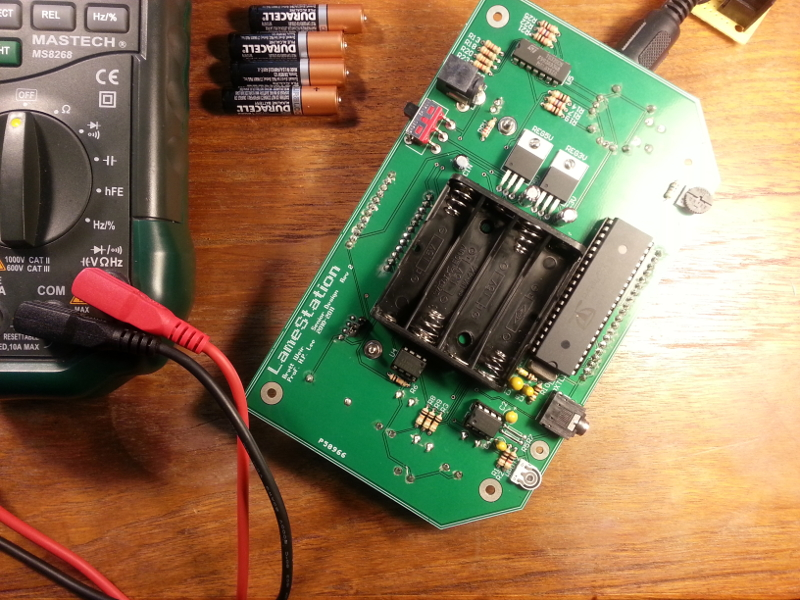

<div class="featurette">
  
  <p class="lead">Have you ever wanted to do something really awesome?</p>
  <p>From the day I started college, I knew that my senior design project would be the single most important experience of my time there.</p>
  <p>I stumbled across a product called the <a href="http://www.xgamestation.com/view_product.php?id=33">Propeller HYDRA</a> that I immediately knew was the coolest thing I had ever seen. I told all my friends we should pool our money and buy one.</p>
  <p>But then I thought, hey! I'm an engineer. <strong>Why not just build one?</strong></p>
  <p>That thought set in motion a course that would change my life forever. I came to my faculty advisor and told him I wanted to build a game console. He thought I was crazy, but said go for it. For the next year or so, starting with little more than an idea, I set out to build the coolest senior design project ever.</p>
  <p>What I created was more than I ever could have imagined. I wrote an LCD driver, an audio synthesizer, a graphics library, content generation tools, and the first game for the platform, Tank Battle. In the process, I learned C, Propeller Spin, assembly language, Altium Designer, Mathematica, the Allegro library, TileStudio, LaTeX, and the list goes on, just to build the thing.</p>
  <p>In the process, my perception of what was possible for one person to do changed radically. I realized that I really could do anything I put my mind to with enough hard work and time, and since then, I have been on a mission to spread the word to anyone within earshot.</p>
  <h2>Meet The Creator</h2>
  <p></p>


  <h2>But Why?</h2> 
  <p>The LameStation has come to represent my own personal brand of life in many ways. When I began the project, it was little more than a faint glimpse of an idea. It is far more than just a board with some components; the LameStation represents my belief in the impossible, that human will can triumph in the face of incredible odds, and I want to show everyone that you really can do it.</p>
  <p>By supporting this project, you are supporting the idea that we can bring about change and create amazing things in our own lives. You are affirming to the world that you believe that human will is a powerful thing and that inspiration should be captured and formed into tangible results.</p>

</div>

Brett Weir is the creator 

LameStation LLC

Brett is an An electrical engineering by training, software 
